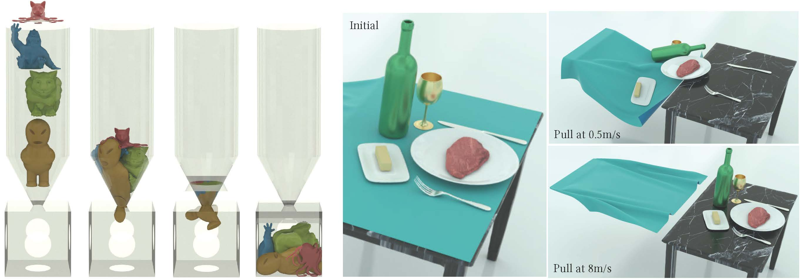

接触
要准确地仿真固体，就必须确保它们不发生相互穿透，如下图所示（左侧）。一种有效的方法是对时间步长施加 CFL（Courant-Friedrichs-Lewy 条件）上限，这在物质点法（Material Point Method，MPM）之类的方法中尤为重要。在有限元方法（Finite Element Method，FEM）中，这要求对接触力进行精确建模。然而，精确地建模接触并非易事。接触本质上是一个非光滑过程，它在固体相互接触的瞬间突然发生。目前并不存在能够准确刻画这一现象的势能形式。

在实际应用中，判断两个物体是否发生碰撞，通常依靠视觉与思维上对它们接近程度的评估。当它们之间的距离不为零时，说明仍存在空隙，尚未发生碰撞。在计算语境下建模物体间的相互作用时，这一概念至关重要。
为避免碰撞或穿透，我们可以保证运动物体表面之间的距离始终不降为零。这一思路在计算仿真的时间积分问题中尤为有用。我们用不等式约束来建模这一情形，这些约束与边界条件相结合，便将时间积分问题表述为： 这里，\(c_k\) 度量固体表面上特定区域对之间的距离，而 \(\epsilon \rightarrow 0\) 是一个很小的正值，用以确保 \(c_k(x)\) 保持严格为正。
在式 (2.3.1) 所示问题的局部极小点处，需满足 Karush-Kuhn-Tucker（KKT）条件，如下： 在该条件中，\(\gamma_k\) 是约束 \(c_k(x) \geq \epsilon\) 的拉格朗日乘子。具体来说，\(\nabla c_k(x)\) 指向接触对 \(k\) 的接触力方向。这一方向与由 \(\gamma_k\) 表示的幅值相结合，便给出该点处实际的接触力。
注记 2.3.1 (互补松弛条件). 互补松弛条件 \(\gamma_k (c_k(x) - \epsilon) = 0\) 起着关键作用：它保证只有当固体相互接触（\(c_k(x) = \epsilon\)）时才会存在接触力（\(\gamma_k \neq 0\)）。反之，当固体未接触（\(c_k(x) > \epsilon\)）时，不应存在接触力（\(\gamma_k = 0\)）。
定义 2.3.1 (活跃集). 对于带有如下定义的不等式约束的优化问题 \[ \forall k, \ c_k(x) \geq 0, \] 活跃集（active set）定义为 \[ \{ l \ | \ c_l(x^*) = 0 \}. \] 这里，\(x^*\) 是该问题的局部最优解。
注记 2.3.2 (组合困难). 互补松弛条件表明，在解处只有活跃集内的约束才具有非零的拉格朗日乘子 \(\gamma_k\)。这意味着，与等式约束不同，不等式约束不仅需要求解拉格朗日乘子的取值，还要求判定哪些 \(\gamma_k\) 应被置为 \(0\)。这就带来了组合上的困难。
处理带不等式约束的优化问题有大量可用技术。每种方法都引入了不同的思路，针对问题的不同侧面。
-
原始-对偶方法： 这一类方法同时处理原始问题（即原优化问题）与其对偶问题。对偶问题往往能为原始问题的解提供有价值的洞见，因此这一思路颇具吸引力。这类方法是迭代式的，利用原始问题与对偶问题之间的关系来逐步改进初始解。然而，原始-对偶算法的设计与实现可能相当繁复，需要在两类问题之间小心权衡。这些方法虽然有效，但对于复杂的高维问题可能并不高效或直接。
-
投影最速下降法： 这类方法是对经典最速下降法的修正，用以处理约束。每次迭代中，算法沿最速下降方向移动，若因约束而偏离可行集，则再投影回可行集。该方法简单直接，因而广受欢迎，但面对收敛缓慢的病态问题，或面对难以投影的约束时，可能力不从心。
-
内点法： 又称障碍函数法，这类技术引入一个对不可行解施加惩罚的障碍函数，从而把解引导向可行域的内部。该思路有效地将约束问题转化为无约束问题，可用常规技术求解。然而，障碍函数的选择会显著影响方法的表现。这类方法对某些类型的问题很高效，但若可行域难以定义或缺乏简单的内部，则可能难以奏效。
尽管上述各种方法各有优劣，我们的主要关注点将是一种鲁棒而准确的接触建模方法，即增量势接触（Incremental Potential Contact，IPC）。增量势能接触（IPC）的独特之处在于用一个光滑的势能来近似接触过程。这一变换有效地把问题转化为无约束问题，便于应用各种高效且鲁棒的优化技术。增量势能接触（IPC）的一个关键特性是，它能够把相对于非光滑形式的近似误差控制在预先确定的界内。这一特性进一步提升了方法的鲁棒性与可靠性，使其成为解决接触问题的一条颇具前景的途径。